全国ツアー最終日 東京！
来てくださったみなさん
本当にありがとうございました！
ameba中継 観てくれた方もありがとー(*^ω^*)
さあお待ちかねのヘアはこんな感じー♪
昼...くるくるポニテ
夜...ハーフアップくるくる
＼昼...くるくるポニテ／
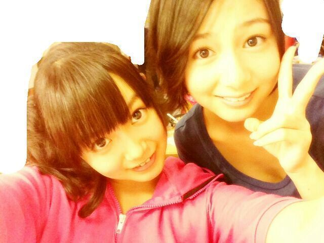
＼夜...ハーフアップくるくる／
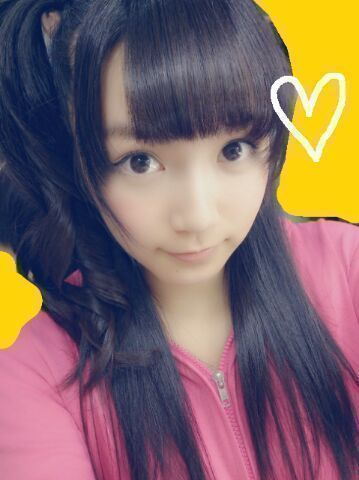
くるくるポニテってのは
毛先も巻いてるけど
結ぶ前に くるってやってるんだよー☆
最後は安定のひめたん結びで締める！
千秋楽って感じするでしょ( ω )？
さあ10パターンやったけど
あなたはどのヘアが好きかなー？
個人的にハーフツインがめちゃツボ←
で肝心のライブはねー
もうとにかーく熱気が凄まじい。熱かった！
真夏の全国ツアーとは
こーゆーことかって感じよねー
札幌と福岡は初ライブだったり♪
東名阪Zeppは１年ぶりてことで
私たち成長してたかなどうかなー(〃ω〃)
10公演すべて違うセットリストでーとか
万歩計つけて列島を完歩しよーとか
下駄っぷとかコントとかはじめてだらけで
もちろん全国ツアー自体初ですからー
メンバーやスタッフさんには
たくさん迷惑もかけたかも...
そしてみなさんもブログで
「リハ頑張れー」とか言ってくださるの
とっても励みになりましたがーちで！
そうやって周りの人たちに支えられて
成功した全国ツアーだったかなと思いまーす♪
努力、感謝、笑顔は
私たち乃木坂46の３原則なので
これからも大事に大事にしていきます( ^O^ )
東京公演では
全員でパフォーマンスできて
この46人で乃木坂46なんだなーって
改めて実感しました。
ずーさん(高山一実ちゃん)も言ってたけど
その中のひとりとして活動できていることが
誇らしい！
いつか46人で一列になって
ぐるカーのダンスとかしてみたいよね
もう圧巻だろうね！多！ってなるよね！
こっからバックヤードで
ゆみ姉も来てくれてね
お話したんだよー
楽曲中 ひめたんの声めっちゃ聴こえるー！
って言ってくれてね
ほんまにほんまに嬉しくて///
ひめきゅんさんにもひめたんの声
聴き分けられるかなー？んふふ
ちなみにこの日ね
朝ね楽屋でね指７本やけどしたのよ
まあーいろいろあってね(笑)
で、やばあーめちゃ赤くなったって
大騒ぎしてたんだけどね
ちゃーんと冷やしてお薬塗ったら
本番前には痛くなくなったのー！
やけどは正しく手当てしたら治ったの(｀・ω・´)
でもみんなは気を付けてねー
そして２つサプライズ発表されましたー
◎10/6 国立代々木競技場第一体育館
◎11/27 7thシングル発売
みなさーんスケジュール帳に
ちゃーんと書いといてーよー
詳しくは公式サイトに飛んでみてね＼( ^O^ )／

 バドミントンやってる人ってどー思う？？
バドミントンやってる人ってどー思う？？スマッシュッッッ
あ、あのかっこいーと思う( ^ω^ )
あのばしゅーんってやつ打たれたら
はああごめんなさいごめんなさいってなる！
今日はワンピースを見たけど、
ひめたんはみたことある？うーんちらっとしかみたことないかな...
いつか原作一気読みしたいー
ひめたんってDDをどお思いますか？乃木坂DDさんならしゃーないと思う。
ただし一推しはハッキリすることね(｀・ω・´)笑
ひめたーんは２番目でも３番目でも１番目でも
大歓迎だからねー

 万歩計は大丈夫だったかな？
万歩計は大丈夫だったかな？10公演中6公演は
リセットされましたけども。
なんで？ひめたん万歩計さんに嫌われてる...？
ひめたんは楽天で買った事あるみたいだけど、
何買うの？？それは今回の楽天スーパーセールでって
解釈でいーんかなー？
うーんなんとなーくしか決まってないから
ままと欲しいものまったりさがすよー( ^^ )
どうしたらそんなに可愛くなれる？
どうしたらそんなに歌が上手になれる？あんまり褒めたら調子のるよー
もっともっと可愛くなりたいし
歌も上手になりたい！
 かなりんの好きなところ教えて
かなりんの好きなところ教えてみんなにぺろぺろするところ！なんてね！
なんか物の考え方とか分析力とか
へーそんなとこまで気づくんだーって
いっつも思う( ω )
褒めたらがち照れしちゃって
はわわーってなるとこ可愛いよねー///
あと普段から意識高いとこ尊敬してます。
かなりんいつもありがとー大好きぺろぺろ！
BAT BOYS Jってドラマ見てなくても
映画わかりますか？わかると思いますよー☆
でもあらかじめ登場人物ってゆーか
あーこんな組織があるのかーくらいは
頭に入れといたら困らないかもー
リボンの洗い方が悪いのかな〜？
だから、若干リボンが汚れてるのかな〜？w...言い返せない。
ひめたんもまだまだだなー
ただ捨てないで使い続けてるところが
えらいでしょ？( ^ω^ )
明日は京都個握、
そして楽天スーパーセールの日よ＊
楽天スーパーセールは0:00スタートよ＼( ^O^ )／
京都個握いくよーって方はよろしくねー
宿題は心配しないでー♪
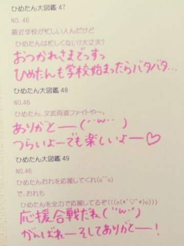
(＊´・ω・＊)
公演４日目 名古屋！
来てくださったみなさん
ありがとうございました(*^ω^*)/
ヘアは
昼...おはなくるくる
夜...編み込みツインvol.2
夜...の編み込みツインは
あれ札幌でもやってたろ？って
言わないで(´・ω・｀)
ちょっと作りが違うんだよー
詳しく説明するとながーくなるから割愛するけど
ひとことで言うなら編み込みの太さとか！
後ろからみたらいい感じになってるんだよー
＼昼 おはなくるくる／
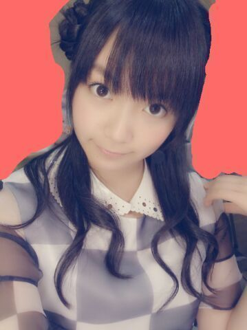
＼夜 編み込みツインvol.2／
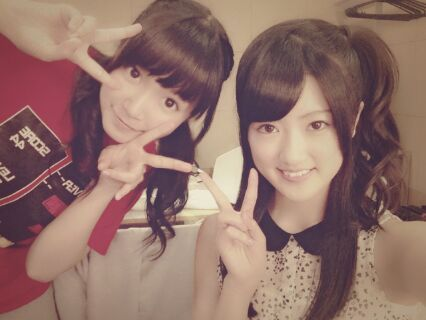
ほれ！ほれほれほれほれ
最近乃木坂内でひめたんヘアが流行ってるよー♪
ちま可愛いよおおっ


そんなひめたんはメンバーさんに
「やっぱ冒険して正解だね( ^ω^ )」って
褒めていただいておるよー
とゆーことで
Zepp Nagoyaのステージは
１年ぶりに立たせていただきました！
初ワンマン懐かしいなー
あれから成長できたかなー
あのときより楽しいライブお届けできてるかなー
そしてまた絶対に名古屋帰ってきます！
あと、ここまで８公演してきて思ったのは
Zeppはファンのみなさーんとの距離が
ほんとに近いから
ひとりひとりのおかおもよく見えるし
一・体・感！
もーのーすーごーい一体感！
みなさーんの熱気が直に伝わってきて
楽しす∩^ω^∩
サイリウムもきらきらしててやばたんっ
ライブってのは
演者と観客のみなさんと一緒に
出来上がってくもんなんだなーて感じました＊
それにねコメント読んでたらね
この全国ツアーで
ひめたーんのこと気になってきたー！
って方もちらほらいらっしゃって
もうねー嬉しいよー(〃ω〃)
見つけてくれてありがとーっ
ひめたんはたくさんの乃木坂ファミリーさんと
もっと仲良しになれた気がして
素敵な夏休みだよー

 学校の宿題で源氏物語を論じてるんだけど
学校の宿題で源氏物語を論じてるんだけど
いいタイトルが思いつかないんだ...
一緒にタイトル考えてください(笑)源氏物語を読んで、とかだめだから
聞いてるんだよねそーだよね。
...あの、ひめたんひとつ思ったんだけど
論文いっこも読んでないんだ(・ω・)はは、は
こんな僕でも応援してもいいでしょうか？何をいいますか！
いつもありがとうございますっ
たくさん支えられて
ひめたんは今日も頑張れるよー＊＊＊
世界で一番お団子が似合うと思うのは・・・
贔屓目で見ちゃってるからですか？わらうんそーだと思う( ω )
でもねひめきゅんさんなら
それで間違ってないと思うお！
ひめたーん照れ照れ。
ここまで4公演全部違うヘアできました←これは残りの公演も違うヘアって振りかなー？笑そのつもりでここまで来ましたっ
ラスト２公演も期待しててー♪
乃木坂の曲で一番何が好きですか？？一曲か...決め難いなー
ぐるぐるカーテン、海流の島よ、コウモリよ
とかが好きかなー(〃ω〃)
あとは自分１回も
パフォーマンスしたことないけど
世界で１番孤独なLover、音が出ないギター
とかも好き！名曲多し！
子供の頃よく何して遊んでた？おんなのこ三姉妹なので
いろんなおもちゃ持ってたよー
シルバニアファミリーとかリカちゃんとか
基本的にインドア派☆
握手の時ブログにいつも書いてる
コメント名言えばわかりますか？わかる自信あるよー＼( ^O^ )／
ぬいぐるみって洗濯機で洗うもんなの！？え？違うの？
でもひめたんが大事にしてた
ピンスモちゃん(チワワ)は洗濯機でぐるぐるして
洗濯ばさみで吊るしてたよー♪るん
あ！ひめたんビームを
学校で流行らせたいと思います（笑）
一応許可いいかなー？ぜひぜひよろしくお願いしまっすっ(<・ω・>)
BAD BOYS Jに出たいと思ったことある？
出るとしたらどの役やりたい？うーんどうしよーかなー
ビーストレディースさん楽しそー♪
りばりば先輩って言ってお。りばりばせーんぱいっ(*^ω^*)
明日はラスト東京公演
全員でステージ立てるのがもう嬉しくて。
いくよーって方はよろしくねー
今日はしっかり寝ること！約束よ！
嘘ついたら...ごくっ
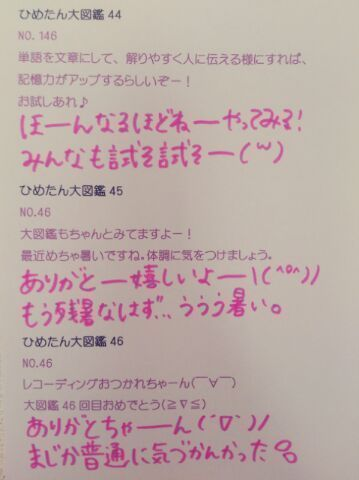
(＊´・ω・＊)
公演３日目 大阪◎
ライブ来ていただいた方
ありがとうございました( ^O^ )
熱いね大阪！
ひめたんは初めてのZepp Nambaだったので
みなさんに会いに行けてほんまによかったー
髪型は
昼...ハーフツインくるくる
夜...ふわふわツイン
大阪はラブリーになった(〃ω〃)んふふー
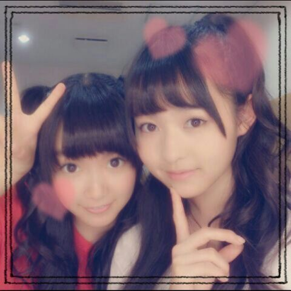
なかいさん。
万理華がヘア悩んでたから
「ひめたん結びやってよー」て提案したら
ほんまにやってくれた∩^ω^∩
さーすが万理華！
そして似合ってるよ可愛いよおおー
ふわふわツインもまた写め貼るから
楽しみにしとってね☆
さあー大阪公演行ったよーて方は
よかったら感想とか教えてほしいなー
夜はまちゅん、万理華、せちゃん、ひめたんで
コントやりました！
もーほんまにどきどきしとったけど
よかった楽しくできたー＼(^^)／
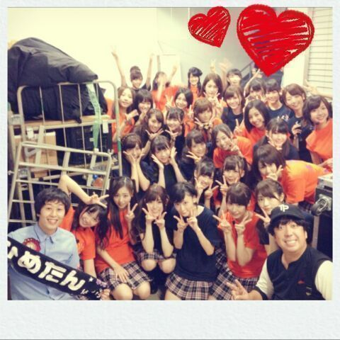
日村さんと
スカイラブハリケーンの桜井さんと♪
おふたりとも
お忙しい中ありがとうございました(*^ω^*)
桜井さんはなんとなんと
ひめたん推しなんだってー！
ひめきゅんさんだあーるんるん
気づけば全国ツアーも
折り返し地点にきてしまったー
残るは名古屋・東京！
最後までがんばるぞー＼(^^)／
とゆーことで準備してきまーす♪
(＊´・ω・＊)
＼ 愛されまあや
× ひめたんびーむ ／
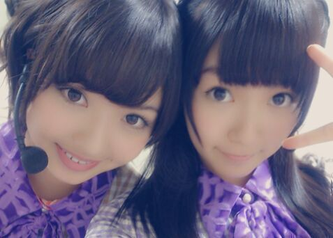
広島コンビだよー
愛されまあやだいすきよちゅちゅ///
乃木どこの話だけど
広島では今川焼を二重焼と呼ぶよー
といっても広島の中でもいろいろあるみたいで
まあやと意見が割れて不安だった(´・ω・｀)
二重焼派の方もいらっしゃったみたいで
安心しましたー♪
乃木のの聴いてくださったかなー？
なんか終始ふわっふわしてたけど
大丈夫だったかな(笑)
不安だったんだけどね、
ほんとに不安だったんだけどね
でもラジオのお仕事めちゃ好きなので
楽しんでやらせていただきました(*^ω^*)
びーむ党みなさんもおいでー♪
とゆことで乃木のの・乃木どこ
オンエア観てくださった方 報告ありがとーう
楽しんでいただけたみたいでよかったー
告知やめようと思ったとか言って
ほんとにごめんなさいごめんなさい←
昨日はひめたんデーだったね！やったね！
そんなひめたんは昨日は
乃木どこ収録に参加してきましたー∩^ω^∩
久々のおろし巻き！
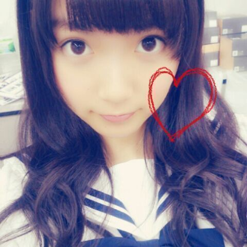
午前中は課題もやったんだよー
夏休みももう終わりだから
時間みつけてやんないとねー♪
公演３日目 大阪！
明日行くよーって方
よろしくお願いします( ^ω^ )
一緒に楽しいライブにしようねー☆
ちなみに夏休みの課題は
いっこも持ってきてないよー！
いつもの質問コーナーに行く前に
なんか「どっちが〜なの？」多かったから
特設コーナー作りましたー
万理華、さゆりんご、真夏
あとねねころ(笑)
ご協力ありがとーうねー
 ひめたんの「ビーム」と
ひめたんの「ビーム」と
まりかの「がうっち」はどっちが強いですか？がうっちは
そーゆーふうに使うもんじゃないからねー♪
by 万理華
すごくどうでもいいね(笑)
by ねねころ
ひめたんビームとさゆりんごパンチの
どちらが僕をメロメロさせてくれますか？二つの力を融合すると
より強力なメロメロが
得られまーすヾ(＠⌒ー⌒＠)ノ
しかし強力すぎて
心に穴が空いた感覚に陥りやすく注意が必要です
by さゆりんご
ひめたんビームと真夏のズキュン
どっちが強いの？ ビーム界の頂点はひめたんビームなんだけど
ズキュン界の頂点だとやっぱりまなったんのズキュンになりそうですヽ(。・ω・。)ノ←
今度戦いましょう｀‐ω‐´)
by まなったん
いやーどうですかー面白いでしょー
こーしてみるとみんな技もってんなー！
それでは普通の質問返しどーん

 俺にエールをください！
俺にエールをください！頑張ってください！
と言いたいところだけど、
無理はしてほしくないなー
だから80％で頑張ってください(｀・ω・´)
中国でいってみたい場所はありますかどこがおすすめなんだろー
個人的にはショッピングとかしたい☆
生ちゃんの夜のテンションに
ひめたんは、どのように相手してますか？ハモるから主旋歌って！と言われて
デュエットしたりとかよくあるかなー
まあ基本的にされるがままですよ
もちろん嫌いじゃないよー∪^ω^∪
...いやだからその、Mとかじゃないってば///
どーしたら
ひめきゅんさんのメンバーになれるの？ひめきゅんさんの定義は一応
「ひめたんにきゅんきゅんしたら
ひめきゅんさん」ってことになっておるよー♪
AKB48のドラフト会議受けるんだけど
応募項目の中に「目標のメンバー」の欄に
「中元日芽香さん」って書いてもいいかな？目標だなんて嬉しいけど
乃木坂メンバーの名前は書けるんだろうか...
どのくらいひめたんの事考えてたら
ひめきゅんって言っていいかな？ひめたんのことちょっと気になってても
いっぱい気になってても
ひめきゅんさんに仲間入りしてくれたら
ひめたん喜んじゃうよー∩^ω^∩
静岡の印象ってどんな？？金魚！
去年のお誕生日に静岡でお祝いしてもらったの
いまでも覚えてるよー( ^ω^ )
まいまい若月の故郷でもありますよねー♪
東京から割と近いイメージ！
いつかプライベートで行ってみたいですー
メンバーの中で誰と一番なかがいいのぉ？みんな仲良しだよーと答えたいけど
そーゆーのは求めてないんだよねそーだよね
そうだなーひめたんのこと１番知ってるのは
いくちゃんだろうなーとは思うかな。
画像加工アプリはなに使ってますか？camera360とかは
メンバーみんな結構使ってて
おすすめだよ( ´ ▽ ` )ノ
名古屋の個別ひめたん選んだけど、
よかったかな？わーめちゃ嬉しいめちゃ嬉しい！
いっぱいお話しようねー☆
楽しみ楽しみるんっ♪
GOOD ROCKS! の写真展で
ろってぃー・ひめたんの写真が
みられるそうでーす＼(^^)／
確か１年前＼(^^)／
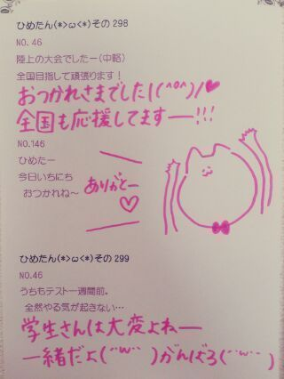
(＊´・ω・＊)
公演２日目 福岡終わりました！
来てくださったみなさん
本当にありがとー( ^ω^ )/
はじめましての方は
乃木坂ライブいかがでしたかなー？
福岡ライブ楽しかったです！
広島から見に来てくださった方も
いらっしゃったのかな。
冒険女子宣言を執行するべく
今回の公演は
昼...サイドポニテ
夜...お団子
でした◎
＼夜の部 お団子／
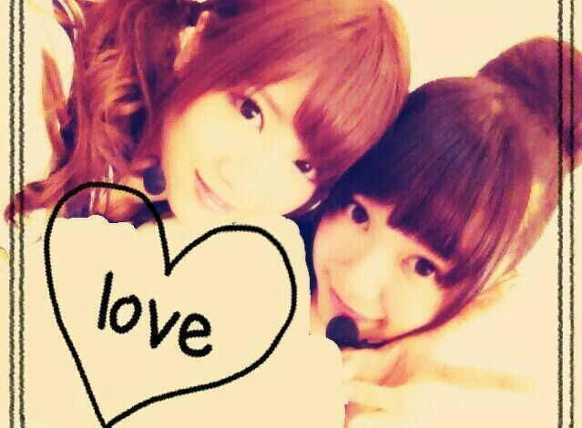
＼昼の部 サイドポニテ／
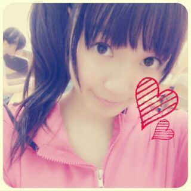
お団子はメンバーで好評だったん///
ここまで４公演 全部違うヘアできました
ここまで４公演 全部違うヘアできました
ここまで４公演...
よ、よーし次は何しよっかなー♪
せいたんかわゆす( ^ω^ )るん
最近せいたんとじゃれあい楽しーんだよー
せいたんせいたんブログ読んだぞ照れたぞー
さて、福岡は
地元からは一番近い会場ということもあって
勝手にただいま感を味わってた＊
ただいまー∩^ω^∩
そしてみさみさとも言ってたのが
なんか...初心を忘れずにとはこのことだろうかー
ってそーんな気持ちになりました
とりあ福岡でライブ出来てよかった！
福岡のみなさん あたたかく迎えてくれて
本当にありがとうございましたっ
みなさん、大好きっちゃ！
かなりんびーむやばたんやばたん////
かなりんのハーフアップくるくるも
ハーフお団子かなりんも
全部かわいかったー♪
そうそう楽天スーパーセール！
このたび実行委員になってCMも撮ったんだよー
ちょっとだけどみーんなうつってるから
よかったら探してみてね☆
お願いムービー作ったりいろいろしたから
楽天スーパーセールのホームページに
飛んでみてくださーい( ω )
そして前回のブログは
あたたかいコメントありがとうございましたっ
今はパワーをいただくばっかりで
何もお返しできてないかもしれないけど
３年目も頑張りますっ(｀・ω・´)/
これからもよろしくねー♪
まーいつものことだけど
今日のブログとっ散らかってんなー！

 自転車こいでない疑惑が
自転車こいでない疑惑が
かけられていましたが、真偽はいかにー？こーいーだーよー
でもねちょっと言い訳が許されるならね
あれ結構疲れるのよ。
...い、いやいやそれでも漕いだ！漕いだぞー
 夏休みの宿題ちゃんと提出しますか？
夏休みの宿題ちゃんと提出しますか？
うまい言い訳とかあったら教えてほしいです！ちゃんと提出はするタイプよー( ^^ )
賢い言い訳するよりも
「できたら持ってくるねてへぺろ///」
って可愛く言って許してもらいましょう。
夏の暑さ対策はなにしてますかー？去年までは人工的な風は好きじゃないーとか
ゆってたのに
今年はクーラーがんがんに浴びて
おかげでクーラー病なってしまった(´・ω・｀)
室内では基本薄着で過ごす！
部屋では夜のテンションだったー？部屋入ってしばらくはねー
おうた歌ってたりしますよー
でもねもうちょっと遅い時間まわると
落ち着いてお話したりします
札幌でも福岡でも まー語った語った♪
ひめたんって沖縄の方言知ってる？「涙そうそう」の歌がとっても好きなんだけど
あーゆーこと？
そうそう？うーん意味までは...
ぜひ教えてください( ω )
去年の自分と今の自分比べてみて。
結構成長できたところあるんじゃない？うーんそうだと嬉しいけどなー
自分じゃよくわかんないや。
もちろん成長できるように
頑張ってきたつもりではあるんだけどさ...
ひめたんはウィンクは得意ですか？
やってってお願いしたらやってくれますか？得意かどーかわかんないけど
難なくできるっちゃーできるよー
お願いしたらやったげるー( ^ω^ )
りぼんってどうやって洗ってるの？素材にもよるけど
ぬいぐるみみたいに洗濯機でぐるぐる...
実はひめたんは
どＭだったりするんでしょうか？ちっがっいっまっす！
なんかねひめたんはそっちなんじゃないかって
メンバーからもよくいじられるんだけど
心ではいつも泣いてますよー(〃ω〃)んふふ
ってかひめたんって本当に馬鹿なの？？それは残念ながら否めない。くう...
ひめたんと握手したいんだけど、
どんな話したら仲良くなれるかなー？なんでもいーんだよー♪
気軽にお話しましょ！
びーむ(<・ω・>)
ヒットは出来る？野球のカキーンってやつですか？
できないですーバット握ったことないのー。
昨日のごはんのときにね
万理華がおとなりだったんだけどね
それでいろいろお話したんだー
万理華とお話して
元気になったよありがとー◎
あたしたちはどうやら
似てるらしい いろいろとね♪
さっすがなかいさんやね！
帰ってきてみんなで
劇場版BAD BOYS J 試写を観てきましたー☆
みんなかわいかったよ！
やっぱ広島弁は最強じゃ！
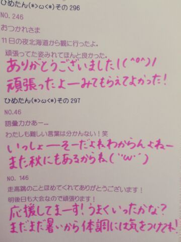
(＊´・ω・＊)